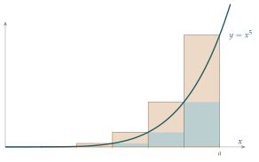

Prove that \[\sum_{r=1}^{n} r(r+1)(r+2)(r+3)(r+4) = \tfrac16 n(n+1)(n+2)(n+3)(n+4)(n+5)\] and deduce that \[\sum_{r=1}^{n} r^5 < \tfrac16 n(n+1)(n+2)(n+3)(n+4)(n+5).\]
Prove that, if \(n > 1\), \[\sum_{r=0}^{n-1} r^5 > \tfrac16 (n-5)(n-4)(n-3)(n-2)(n-1)n.\]
Let \(\mathrm{f}\) be an increasing function. If the limits \[\lim_{n \to \infty} \sum_{r=0}^{n-1} \frac{a}{n}\,\mathrm{f}\!\left(\frac{ra}{n}\right) \qquad\text{and}\qquad \lim_{n \to \infty} \sum_{r=1}^{n} \frac{a}{n}\,\mathrm{f}\!\left(\frac{ra}{n}\right)\] both exist and are equal, the definite integral \(\displaystyle\int_0^a \mathrm{f}(x)\,\mathrm{d}x\) is defined to be their common value. Using this definition, prove that \[\int_0^a x^5\,\mathrm{d}x = \tfrac16 a^6.\]
The hook
You have been integrating for years. You know that \(\int_0^a x^5\,\mathrm{d}x = \frac16 a^6\) because “integration is the reverse of differentiation”. But that is a theorem, not a definition. What is an integral?
The honest answer is: an area, defined as a limit of sums of thin rectangles. This question asks you to compute an integral from that definition alone, with no antiderivatives, no fundamental theorem, nothing but adding up rectangles and taking a limit. It is harder than you might expect, which is exactly why the fundamental theorem of calculus, which makes it easy, is such a remarkable result.
Before you start
The two sums in part (iii) are sums of areas of rectangles of width \(\frac an\). For an increasing function \(\mathrm{f}\), which sum is an underestimate of the area under the curve, and which an overestimate?
The first sum uses the height at the left end of each strip, \(x = \frac{ra}{n}\) for \(r = 0, \ldots, n-1\). For an increasing function that is the lowest point on the strip, so the rectangles fit under the curve: a lower sum. The second uses the right ends, \(r = 1, \ldots, n\), giving rectangles that poke above the curve: an upper sum (Figure 4.1.1). The definition says the integral exists if both sums approach the same limit as the strips get thinner.
For \(\mathrm{f}(x) = x^5\) both sums involve \(\sum r^5\). Parts (i) and (ii) bound that sum above and below.
Working it through
Stage 1 A sum that telescopes
Write \(P(r) = r(r+1)(r+2)(r+3)(r+4)(r+5)\), a product of six consecutive integers. What is \(P(r) - P(r-1)\)?
\(P(r)\) and \(P(r-1) = (r-1)r(r+1)(r+2)(r+3)(r+4)\) share the five factors \(r(r+1)(r+2)(r+3)(r+4)\), so \[\begin{aligned} P(r) - P(r-1) &= r(r+1)(r+2)(r+3)(r+4)\bigl[(r+5) - (r-1)\bigr] \\ &= 6\,r(r+1)(r+2)(r+3)(r+4). \end{aligned}\] Summing from \(r = 1\) to \(n\), the right-hand sides telescope to \(P(n) - P(0) = P(n)\). So \[\sum_{r=1}^{n} r(r+1)(r+2)(r+3)(r+4) = \tfrac16 P(n) = \tfrac16 n(n+1)(n+2)(n+3)(n+4)(n+5).\]■
Since \(r^5 < r(r+1)(r+2)(r+3)(r+4)\) for every \(r \geq 1\), the inequality follows.■
Stage 2 A lower bound
Adapt Stage 1 to a product of five consecutive integers going down: \(r(r-1)(r-2)(r-3)(r-4)\). Find its sum from \(r = 0\) to \(n - 1\), and compare it with \(r^5\).
Let \(Q(r) = (r-5)(r-4)(r-3)(r-2)(r-1)r\). Then \(Q(r+1) - Q(r) = (r-4)(r-3)(r-2)(r-1)r\bigl[(r+1) - (r-5)\bigr] = 6\,(r-4)(r-3)(r-2)(r-1)r\). Summing from \(r = 0\) to \(n - 1\) telescopes to \(Q(n) - Q(0) = Q(n)\), so \[\sum_{r=0}^{n-1} (r-4)(r-3)(r-2)(r-1)r = \tfrac16 (n-5)(n-4)(n-3)(n-2)(n-1)n.\] Now compare term by term. For \(r = 0\) both sides are \(0\). For \(1 \leq r \leq 4\) the product contains a zero factor, while \(r^5 > 0\). For \(r \geq 5\) every factor is positive and at most \(r\), and some are strictly smaller, so the product is less than \(r^5\). Since \(n > 1\), the sum includes \(r = 1\), where the inequality is strict, so \[\sum_{r=0}^{n-1} r^5 > \tfrac16 (n-5)(n-4)(n-3)(n-2)(n-1)n. \qed\]
Stage 3 The integral
Write the lower and upper sums for \(\mathrm{f}(x) = x^5\) in terms of \(\sum r^5\). What power of \(n\) appears in the denominator?
With \(\mathrm{f}(x) = x^5\), \[L_n = \sum_{r=0}^{n-1} \frac{a}{n}\left(\frac{ra}{n}\right)^5 = \frac{a^6}{n^6}\sum_{r=0}^{n-1} r^5, \qquad U_n = \frac{a^6}{n^6}\sum_{r=1}^{n} r^5.\] By parts (i) and (ii), and since \(L_n < U_n\), \[\frac{a^6}{6}\cdot\frac{(n-5)(n-4)\cdots n}{n^6} \;<\; L_n \;<\; U_n \;<\; \frac{a^6}{6}\cdot\frac{n(n+1)\cdots(n+5)}{n^6}.\] Each of the two fractions is a product of six factors like \(\frac{n-3}{n} = 1 - \frac3n\) or \(\frac{n+3}{n} = 1 + \frac3n\), each tending to \(1\). So both outer bounds tend to \(\frac{a^6}{6}\), and by the squeeze, so do \(L_n\) and \(U_n\). Both limits exist and are equal, so by the definition \[\int_0^a x^5\,\mathrm{d}x = \tfrac16 a^6. \qed\]

Looking back
Telescoping again. The sums of products of consecutive integers collapsed, exactly like the sums and products in Chapter 2.
Bound, then squeeze. We never found \(\sum r^5\) exactly (it is \(\frac{1}{12}n^2(n+1)^2(2n^2 + 2n - 1)\)); bounds on both sides were enough.
The definition does the work. No antiderivative appeared anywhere. Everything followed from the definition of the integral as a limit of sums.
What’s really going on
The idea of finding areas by summing thin strips goes back to Archimedes, who found the area under a parabola by a version of exactly this argument around 250 BC. Newton and Leibniz turned integration into the reverse of differentiation, and for a century and a half that was how most people thought about it. In 1854 Bernhard Riemann gave the definition that university courses still begin with: divide \([a, b]\) into small pieces, form sums of (width) \(\times\) (height of \(\mathrm{f}\) somewhere in the piece), and say \(\mathrm{f}\) is integrable if all such sums approach one limit as the pieces shrink. The version in this question, with equal strips and left and right endpoints, is a special case that works for increasing functions; Jean-Gaston Darboux’s “upper and lower sums” make the general case clean.
Not every function has an integral
With a precise definition, you can ask which functions are integrable. Every continuous function on a closed interval is, and every increasing function. But consider Dirichlet’s function: \(\mathrm{f}(x) = 1\) if \(x\) is rational and \(0\) if irrational. Every strip, however thin, contains both rationals and irrationals, so every upper sum is \(1\) and every lower sum is \(0\). They never agree, and \(\int_0^1 \mathrm{f}\) does not exist in Riemann’s sense. In 1902 Henri Lebesgue invented a more powerful integral that handles this function (its Lebesgue integral is \(0\)) and behaves much better under limits. The Lebesgue integral is the foundation of modern probability theory, and you will meet it in your second or third year.
Discrete calculus
The telescoping in Stage 1 is calculus in disguise. The “rising factorial” \(r(r+1)\cdots(r+k-1)\) behaves under summation exactly as \(x^k\) behaves under integration: summing it raises the number of factors by one and divides by the new number of factors, just as \(\int x^k\,\mathrm{d}x = \frac{x^{k+1}}{k+1}\). This parallel between sums and integrals, differences and derivatives, is called the calculus of finite differences, and it is a powerful tool for evaluating sums.
The thinking skill
When asked to prove something “using the definition”, use nothing else: no theorems that depend on what you are proving, no familiar shortcuts.
It is surprisingly hard, and it shows you exactly what the shortcuts are worth. At university, the first weeks of every course work this way: definitions first, then theorems that let you stop working from definitions.
Try this next
A limit as an integral. (From STEP III, 1999.) Justify by a sketch that \[\lim_{n\to\infty} \frac1n\sum_{m=1}^{n} \mathrm{f}\!\left(1 + \frac mn\right) = \int_1^2 \mathrm{f}(x)\,\mathrm{d}x.\] Deduce that \[\lim_{n\to\infty}\left( \frac{1}{n+1} + \frac{1}{n+2} + \cdots + \frac{1}{2n} \right) = \ln 2,\] and evaluate \(\displaystyle\lim_{n\to\infty}\left( \frac{n}{n^2+1} + \frac{n}{n^2+4} + \cdots + \frac{n}{n^2+n^2} \right)\).
Archimedes’ parabola. Using \(\sum_{r=1}^{n} r^2 = \frac16 n(n+1)(2n+1)\) and the definition in part (iii), prove that \(\int_0^a x^2\,\mathrm{d}x = \frac13 a^3\).
Rising factorials. Show that \(\displaystyle\sum_{r=1}^{n} r(r+1)\cdots(r+k-1) = \frac{n(n+1)\cdots(n+k)}{k+1}\) for every positive integer \(k\).
The exact sum. Use the identity \(r(r+1)(r+2)(r+3)(r+4) = r^5 + 10r^4 + 35r^3 + 50r^2 + 24r\) and the known formulas for \(\sum r^k\) with \(k \leq 4\) to find \(\sum_{r=1}^n r^5\) exactly.
Further reading
David Bressoud, A Radical Approach to Lebesgue’s Theory of Integration (Cambridge University Press). The story from Riemann’s integral to Lebesgue’s, told through the problems that forced each step.
Michael Spivak, Calculus (Cambridge University Press). Chapter 13 defines the integral by upper and lower sums, exactly as here.
Graham, Knuth & Patashnik, Concrete Mathematics (Addison-Wesley). Chapter 2 develops the calculus of finite differences, with rising and falling factorials.